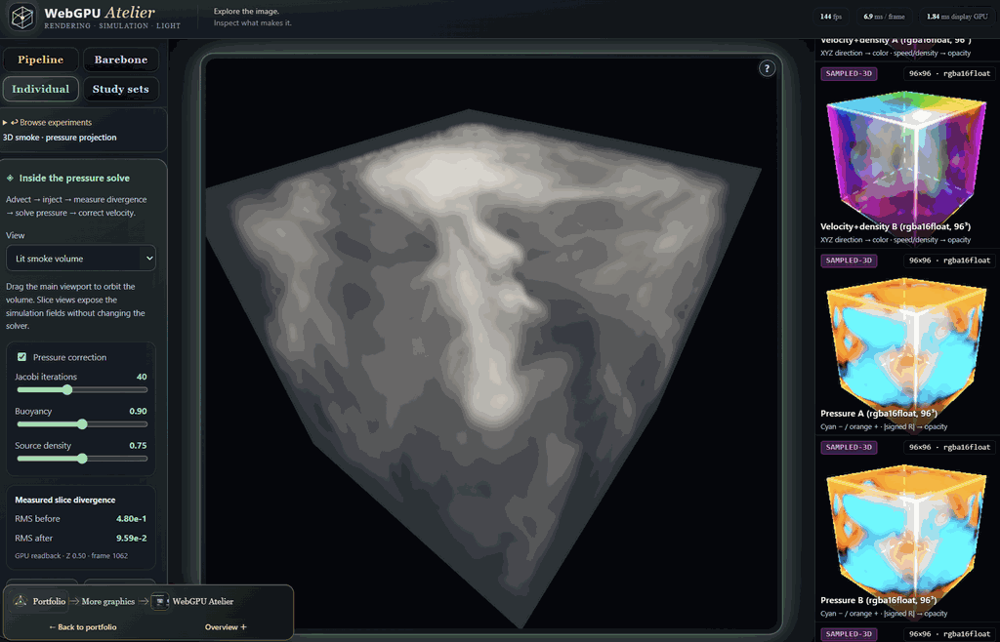
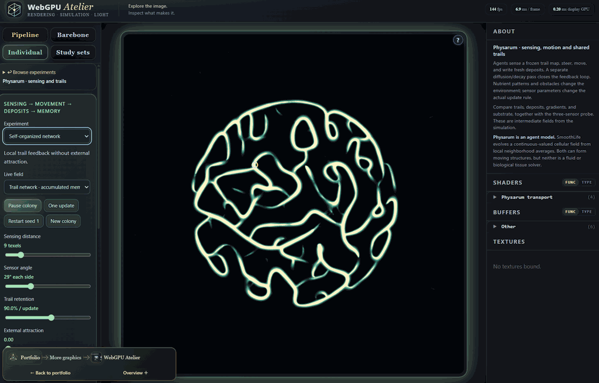
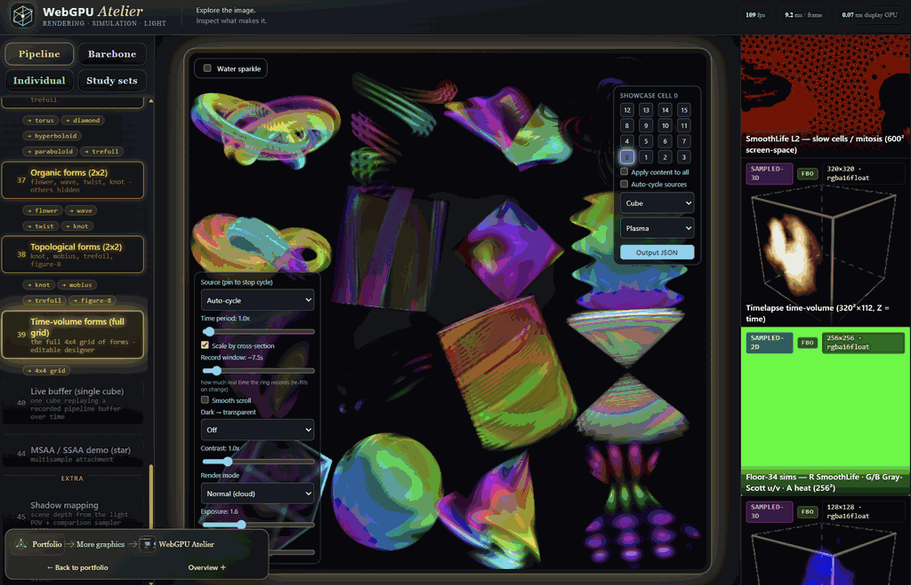

Interactive application
Interactive Video
Overview · selected highlights
WebGPU Atelier
A WebGPU renderer opened stage by stage, with a wider collection spanning pure mathematics, 3D cellular life, reaction–diffusion, swarm dynamics, forward and inverse physics, and quantum measurement models. Shaders, buffers and intermediate fields connect each result to the computation behind it.
ComputeComposeInspect
- ▱
Assemble the stages
Choose geometry layers or a complete-image renderer and its resources.
- ▧
Inspect the buffers
Connect intermediate images and working fields to the final display.
- ∇
Change the model
Probe traversal, pressure, material or optical assumptions in a focused lab.
- Δ
Read the consequence
Compare numerical diagnostics with the image or measured distribution.
The attractive result has an inspectable model and data flow behind it.


